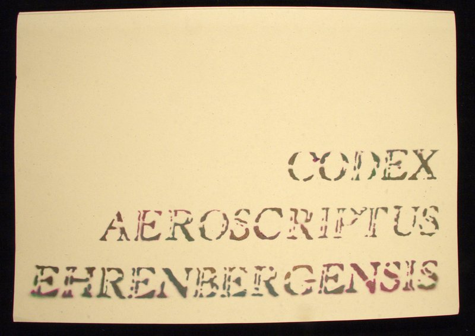
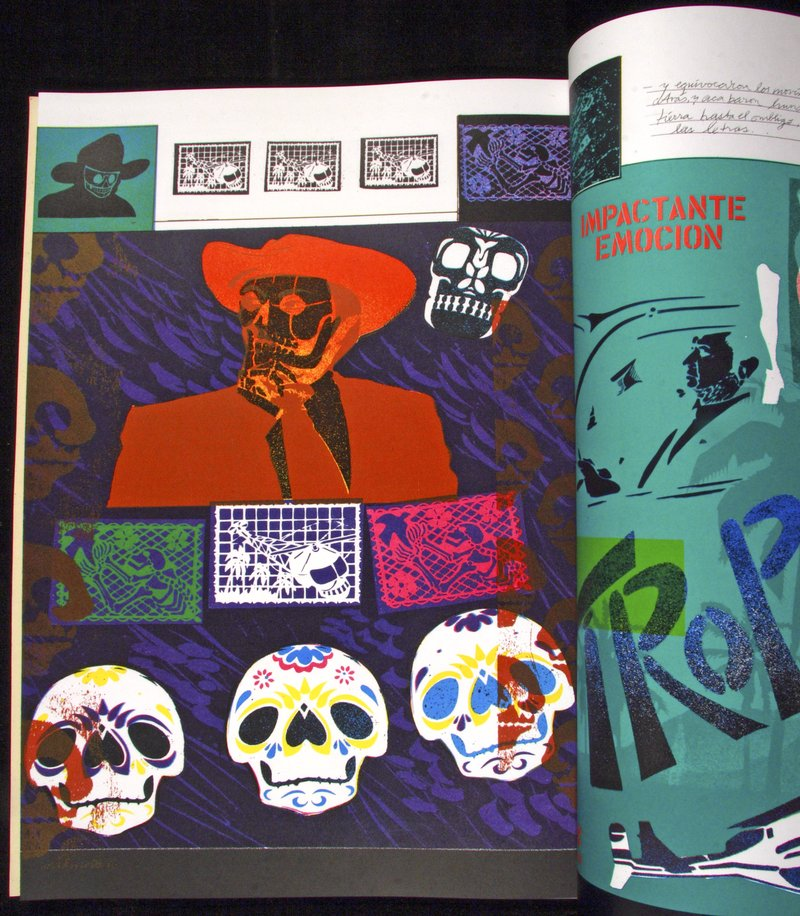

Expresiones contemporáneas de la cultura nahua



Usando un grupo de plantillas cortadas a mano que desarrolló a lo largo de un periodo de veinte años, el artista mexicano de Fluxus Felipe Ehrenberg construyó un códice en forma de biombo con imágenes de la vida mexicana contemporánea. La calidad formal de las plantillas es comparable a los elementos visuales utilizados en los códices nahuas—se pueden desarmar y recombinar para reflejar significados complejos. Ehrenberg diseñó el libro para ser leído de diferentes maneras, entre ellas como una novela policíaca y una partitura musical.
Donación de Ellen T. Baird
Newberry Library: PM4068.H47